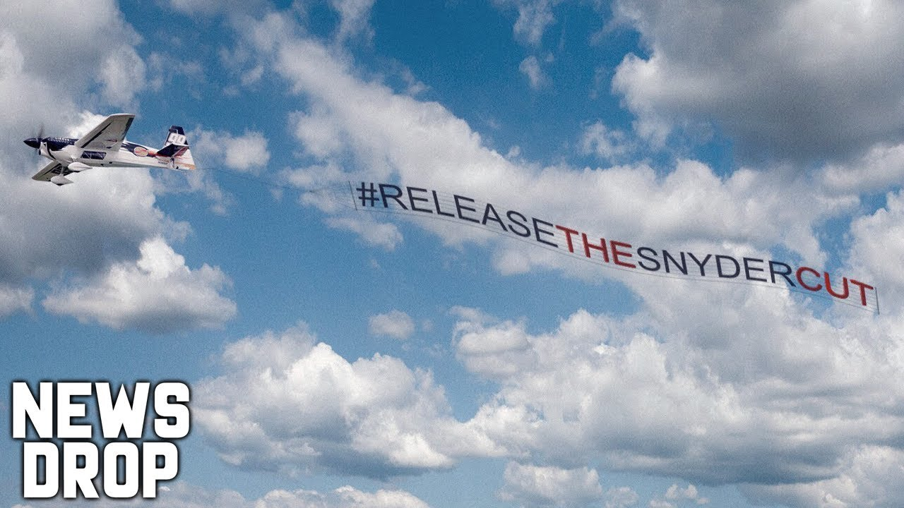

This article is about the 2021 director's cut of Justice League. For the 2017 theatrical version, see Justice League (film).
Zack Snyder's Justice League
Grayscale poster with the ensemble characters
Release poster
Directed by Zack Snyder
Screenplay by Chris Terrio
Story by
Chris Terrio
Zack Snyder
Will Beall
Based on Characters
from DC
Produced by
Charles Roven
Deborah Snyder
Starring
Ben Affleck
Henry Cavill
Amy Adams
Gal Gadot
Ray Fisher
Jason Momoa
Ezra Miller
Willem Dafoe
Jesse Eisenberg
Jeremy Irons
Diane Lane
Connie Nielsen
J. K. Simmons
Cinematography Fabian Wagner
Edited by David Brenner
Music by Tom Holkenborg
Production
companies
Warner Bros. Pictures
Access Entertainment
DC Films[1]
Atlas Entertainment[1]
The Stone Quarry[1]
Distributed by
HBO Max
Warner Bros. Pictures[a]
Release date
March 18, 2021
(United States)
Running time 242 minutes[2]
Country United States
Language English
Budget $70 million[b]
Zack Snyder's Justice League (colloquially referred to as the Snyder Cut) is the 2021 director's cut of the 2017 American superhero film Justice League, the fifth film set within the DC Extended Universe (DCEU) based on the team of the same name appearing in DC Comics publications. It is intended to match director Zack Snyder's original vision for the film, prior to his departure from the production and subsequent studio interference. The film follows Batman (Ben Affleck), Wonder Woman (Gal Gadot), Cyborg (Ray Fisher), Aquaman (Jason Momoa), the Flash (Ezra Miller), and Superman (Henry Cavill) as they form an alliance to stop the extradimensional New God Steppenwolf (Ciarán Hinds) and his army of Parademons from conquering Earth for his overlord Darkseid (Ray Porter).
PLOT
Apokoliptian warlord Darkseid and his Parademons attempt to invade Earth using the combined energies of the three Mother Boxes. Darkseid is foiled by a unified alliance of the Olympian Gods, Amazons, Atlanteans, humanity, and extraterrestrial beings.[c] The Mother Boxes are then separated and hidden in different locations. Millennia later, Superman's death following the battle with Doomsday[d] reactivates the Boxes, attracting Steppenwolf, Darkseid's disgraced lieutenant. Steppenwolf aims to regain Darkseid's favor by gathering the Boxes to form "The Unity", which would terraform Earth into a copy of their homeworld.
Steppenwolf reaches Themyscira through a portal and fights to obtain the Amazons' Mother Box. Diana Prince informs Bruce Wayne, as the two seek to form a team of metahumans[d] to protect the planet. After failing to recruit Arthur Curry, Bruce locates Barry Allen, who enthusiastically joins. Diana locates Victor Stone, who joins after his father, Silas, and other S.T.A.R. Labs employees are kidnapped by Parademons seeking humanity's Mother Box. Steppenwolf kills Atlantean guards and takes their Mother Box, forcing Arthur to join the group. Victor retrieves the last Mother Box, which he had hidden. He reveals it was used to rebuild his body after a car accident, explaining that the Boxes can rearrange matter. The group realizes they could resurrect Superman using the box. Meanwhile, Steppenwolf receives a vision of the Anti-Life Equation on Earth, a secret power sought by Darkseid to control all of existence.
HISTORY
Main articles: Justice League (film) and its production
Following the release of Man of Steel in 2013, director Zack Snyder outlined his vision for the DC Extended Universe (DCEU), consisting of a five-film arc including Man of Steel, Batman v Superman: Dawn of Justice (2016), and a Justice League trilogy.[47] Snyder's original intention was for Batman v Superman to be the darkest in the franchise, and have subsequent films become lighter in tone.[48][49] However, Batman v Superman was poorly received, with criticism for its dark tone, lack of humor, and slow pacing. Distributor Warner Bros. Pictures and Snyder re-evaluated upcoming DCEU films, particularly Suicide Squad (2016), which had already wrapped principal photography, and Justice League, which was a month away from filming. Thus, Snyder and screenwriter Chris Terrio rewrote Justice League to change its tone.[48][50] Cinematographer Fabian Wagner said Snyder wanted to "get away from the stylized, desaturated, super-high contrast looks of other films in the franchise."[51]
Zack Snyder, the director of Justice League
Principal photography for Justice League began in April 2016[52] and wrapped the following December.[53] Months later, multiple cuts of Snyder's Justice League were shown to Warner Bros. executives, in addition to friends and family of Snyder. A final run-time and picture lock were achieved, though the cuts had incomplete visual effects shots and partial audio mixing. Snyder said his multiple cuts were essentially "done", only requiring "a few CG tweaks" for completion.[54][53] Forbes contributor and film screenwriter Mark Hughes reported that Snyder's cut was more than 90% complete,[55] while The Daily Telegraph cited a visual effects expert estimating that WB would need another $30–40 million for completion.[56] Snyder began screening his rough versions of Justice League by February 27, 2017, with studio executives disliking it as they felt the plot was too complex and decided to pivot.[57]
THEATRICAL VERSION
After disapproving of Snyder's direction, WB hired Joss Whedon, who directed the Marvel Cinematic Universe films The Avengers (2012) and Avengers: Age of Ultron (2015), to rewrite the script and help with extensive reshoots.[58] WB CEO Kevin Tsujihara mandated that Justice League's runtime could not exceed two hours.[59][60] WB decided not to delay the film partly due to concerns that parent company AT&T might dissolve the studio in an upcoming merger.[61] Snyder was expected to film scenes that Whedon re-wrote, and they were working together to meet WB's requests when Snyder's daughter, Autumn Snyder, died in March 2017.[58] Though Snyder was initially open to Whedon rewriting the script, he eventually became more resistant as the studio began granting Whedon more directing privileges. However, he did not directly challenge it as he and his family were dealing with Autumn's death.[60]
#RELEASE THE SYNDER'S CUT MOVEMENT

leaving the project, Snyder subsequently saved the rough version of his cut on a hard drive, which had not undergone the post-production process at the time. He kept it as a "memento", so that he could show people or for "snippets" of footage to be included in a documentary, as he thought his version would not be released.[60] Snyder sent an editor in to retrieve materials related to the film on a hard drive. However, he was asked to return them as they were considered to be studio property, but refused to do so as he said it was his "personal use". Sources said that though security was notified, no action was taken as the studio did not expect Snyder would "begin tinkering with an alternate cut of the film".[57]
FANS ACCEPTANCE AND ENJOYMENT OF JUSTICE LEAGUE
The release of Zack Snyder’s Justice League was met with overwhelming enthusiasm from fans worldwide. After years of passionate campaigning through the #ReleaseTheSnyderCut movement, fans finally saw Zack Snyder's complete vision for the Justice League. Unlike the 2017 theatrical version, Snyder’s cut offered a darker, more cohesive story with in-depth character development and epic action sequences
Fans praised the film for its four-hour runtime, allowing for deeper storytelling, emotional arcs, and a sense of grand scale befitting DC’s iconic heroes. Characters like Cyborg and The Flash, whose roles were significantly expanded, became highlights of the movie. The visual effects, dramatic tone, and Hans Zimmer’s score also elevated the film to a more cinematic and satisfying experience.
CHARACTERS
Batman (Bruce Wayne)
The billionaire vigilante who acts as the leader of the Justice League. Bruce Wayne is determined to unite Earth's greatest heroes to prepare for the impending threat from Apokolips. Guilt-ridden by Superman's death, Batman is driven by hope and a desire for redemption.
Superman (Clark Kent / Kal-El)
The last son of Krypton, Superman is resurrected by the Justice League to help combat Steppenwolf. His return symbolizes hope and the ultimate power needed to protect Earth from destruction. Superman's presence is a turning point for the team
Wonder Woman (Diana Prince)

An Amazonian warrior and the princess of Themyscira, Wonder Woman brings strength, wisdom, and leadership to the team. She plays a crucial role in battling Steppenwolf and uniting the Justice League, embodying courage and justice.
Aquaman (Arthur Curry)
The half-Atlantean, half-human King of Atlantis, Aquaman is reluctant to join the League at first, but he becomes a vital team member. His connection to the ocean and his immense strength make him a formidable ally against Steppenwolf.
The Flash (Barry Allen)
A speedster capable of moving at incredible speeds, The Flash uses his abilities to travel through time and space. Barry's lighthearted nature balances the team's serious dynamics, but his powers play a critical role in saving the world from Steppenwolf’s forces.
Cyborg (Victor Stone)
A human-machine hybrid, Cyborg was transformed into a technological marvel after a tragic accident. His connection to the Mother Boxes makes him an essential player in the fight against Steppenwolf. Victor's personal journey from isolation to acceptance is central to the film's theme of unity.